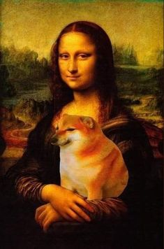
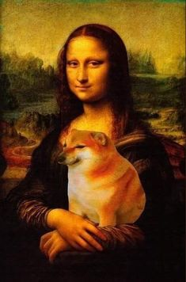

Cheems galery
public
share
group
 Balltze es el nombre del perro que inspiró el meme. Este perro nació en Hong Kong el 9 de enero de 2011 y
falleció el 18 de agosto de 2023 en la misma ciudad. En 2022, los dueños de Balltze comunicaron a sus seguidores
a través de su cuenta de Instagram que el can de once años padecía de pancreatitis y que, además, se le había
encontrado un melanoma en su pata delantera, por lo que tuvieron que cortarle uno de sus dedos.En mayo de
2023, volvió a tener problemas de salud, se le detectaron tres neoplasias dentro de la pleura y dificultades
para respirar.Finalmente, el 19 de agosto de 2023 se anunció, por medio de su cuenta oficial de Instagram,
el fallecimiento de Balltze en la mañana del día anterior durante una toracocentesis.
Balltze es el nombre del perro que inspiró el meme. Este perro nació en Hong Kong el 9 de enero de 2011 y
falleció el 18 de agosto de 2023 en la misma ciudad. En 2022, los dueños de Balltze comunicaron a sus seguidores
a través de su cuenta de Instagram que el can de once años padecía de pancreatitis y que, además, se le había
encontrado un melanoma en su pata delantera, por lo que tuvieron que cortarle uno de sus dedos.En mayo de
2023, volvió a tener problemas de salud, se le detectaron tres neoplasias dentro de la pleura y dificultades
para respirar.Finalmente, el 19 de agosto de 2023 se anunció, por medio de su cuenta oficial de Instagram,
el fallecimiento de Balltze en la mañana del día anterior durante una toracocentesis.
La foto original de Cheems data del año 2017, pero llegó a su máxima popularidad recién el en año 2019,
en la plataforma Reddit. Cheems se hizo viral durante el confinamiento por la pandemia de COVID-19,
dado que suele mostrarse ansioso o asustado, reflejando el estado anímico de la población en ese momento.
Sin embargo, a diferencia de muchos otros fenómenos virales, el meme de Cheems ha conseguido ser duraderoy
mantener su relevancia a pesar del tiempo.
 
